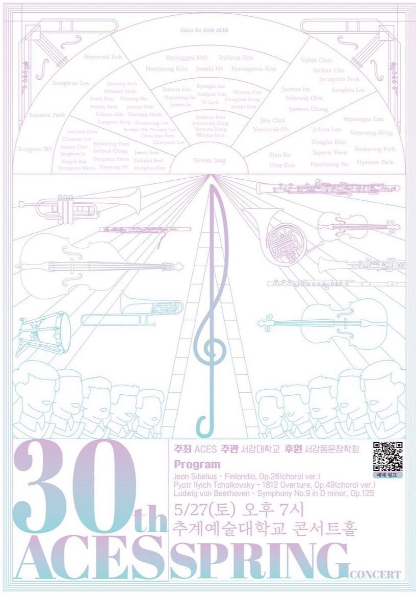

“클래식 음악을 좋아하는 사람이라면 누구나 함께할 수 있는 서강대 유일의 오케스트라 동아리"
서강오케스트라 ACES는 클래식을 연주하는 서강대학교 아마추어 오케스트라 동아리입니다.
클래식은 수백 년 동안 가치를 인정받아온 음악으로,
ACES는 그 속에 담긴 감정과 아름다움을 재현하며 진정한 삶의 자양분을 쌓아가고 있습니다.
혼자가 아닌 함께 연주하며 팀워크와 화합의 가치를 몸소 배우며, 단원들과 유대감을 쌓아갑니다.
매년 5월과 11월에 정기 연주회를 개최하고 있으며,
음악 전공자가 아니어도 클래식에 대한 열정과 관심만 있다면 누구나 입단 가능합니다.
정기 연습, MT, 음악회 관람 등 다양한 활동으로 단원 간 친밀함을 다지며,
비대면 면접과 수시 오디션을 통해 신입 단원을 모집합니다.
ACES는 음악을 통해 깊은 팀워크와 성장을 경험할 수 있는 특별한 동아리입니다.

1994 서강대학교 ACES 창단
2021 ACES-E 온택트 연주회
2021.03.07 ACES-E 온택트 연주회
2021.09.08 ACES-E 온택트 연주회
2022 제 16회 봄연주회, 제 26회 가을연주회
2022.05.28 단장 | 오윤석 지휘 | 박대명 악장 | 김동후
2022.11.26 단장 | 오윤석 지휘 | 박대명 협연 | 이규원, 김동후
2023 제 17회 봄연주회, 제 27회 가을연주회
2023.05.27 단장 | 조수민 지휘 | 장예은
2023.11.26 단장 | 조수민 지휘 | 박대명 악장 | 권동원
2024 제 18회 봄연주회, 제 28회 가을연주회
2023.05.27 단장 | 이채윤 지휘 | 박대명 악장 | 최현아
2023.11.26 단장 | 이채윤 지휘 | 박대명 악장 | 최현아